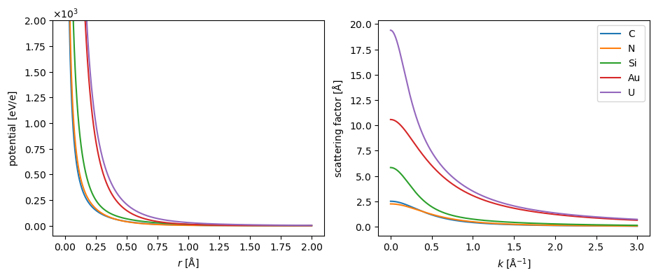
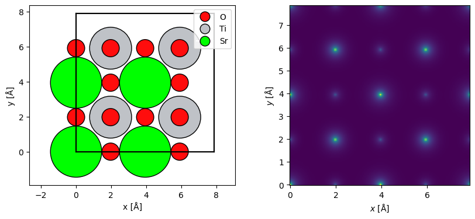
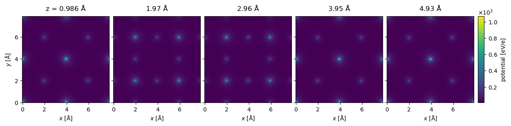
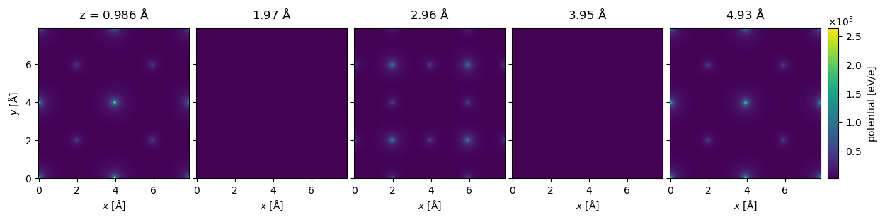
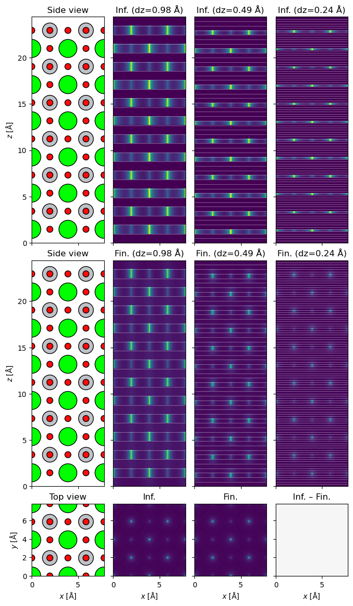

Potentials#
An electron beam interacts with a specimen principally through the Coulomb potential of its electrons and nuclei. Thus the total electrostatic potential of the sample is required for image simulations. Typically, a so-called independent atom model (IAM) is used, which calculates the potential as a superposition of atomic potentials, hence neglecting effects due to valence bonding.
Atomic potential parametrization#
The electron charge distribution of a single atom can be calculated from a first-principles electronic structure calculation, for example using the Hartree-Fock method or density functional theory. Given a charge distribution, the potential can be obtained via Poisson’s equation. Most multislice simulation codes include a parametrization of the atomic potentials, with a table of parameters for each element fitted to the potential calculated elsewhere from first principles.
We show the radial dependence of the electrostatic potential and scattering of five selected elements below. Note that the potentials tend to infinity at \(r=0\) due to the point-like nuclear charge.
symbols = ["C", "N", "Si", "Au", "U"]
parametrization = LobatoParametrization()
potentials = parametrization.line_profiles(symbols, cutoff=2, name="potential")
scattering_factor = parametrization.line_profiles(
symbols, cutoff=3, name="scattering_factor"
)
fig, (ax1, ax2) = plt.subplots(1, 2, figsize=(11, 4))
visualization = potentials.show(ax=ax1, legend=False)
visualization.set_ylim([-1e2, 2e3])
scattering_factor.show(legend=True, ax=ax2);

The default parametrization in abTEM, which is shown above, is created by Ivan Lobato[LD14]. We also implement the parametrization by Earl J. Kirkland[Kir10] and the parametrization by Peng[Pen99]. The differences between the parametrizations are generally negligible at low scattering angles, but the parametrization by Lobato is more accurate at higher angles[LD14].
Independent atom model#
The full specimen potential, \(V(r)\), is usually obtained as a linear superposition of atomic potentials
where \(V_i(r)\) is the atomic potential of the \(i\)’th atom. This is known as the independent atom model (IAM), and as a superposition of independent atoms, it neglects bonding effects. While this is in many cases an adequate approximation, there are situations where that is not the case ([MPS21]) which abTEM is particularly designed to address (as discussed later in the walkthrough.
Potential#
Here, we create a Potential object representing an IAM potential of SrTiO3 with the Lobato parametrization. The sampling denotes the spacing of the \(xy\)-samples of the potential, slice_thickness determines the spacing the slices in direction of electron beam and projection determines how those slices are calculated (as described later in this document).
We also repeat the structure to make a larger supercell for visualizations.
srtio3 = read("./data/SrTiO3.cif")
repeated_srtio3 = srtio3 * (2, 2, 6)
potential = abtem.Potential(
repeated_srtio3,
sampling=0.05,
parametrization="lobato",
slice_thickness=1,
projection="finite",
)
The potential has 24 slices along the \(z\) propagation direction, as may be determined from getting its length.
len(potential)
24
The projected potential, i.e. the sum of all the slices multiplied by the thickness, may be shown using the show method.
fig, (ax1, ax2) = plt.subplots(1, 2, figsize=(10, 4))
abtem.show_atoms(repeated_srtio3, ax=ax1, legend=True)
visualization = (potential.build() * 0.1).show(ax=ax2);

The Potential may be indexed to return a subset of slices. Below we select the first five slices (using the Python syntax for indexing lists, [:5]) and show them all by setting project=False (the default is to show the projected potential) and explode=True (which automatically creates a multi-panel figure; in this instance the latter setting is assumed if the former is set). The titles of the panels are automatically set based on the depth of the slices, note that the slice thickness is not exactly \(1 \ \mathrm{Å}\), it is rounded down to the closest value fitting an integer number of times.
visualization = potential[:5].show(
project=False,
explode=True,
figsize=(14, 5),
common_color_scale=True,
cbar=True,
)

Note
Interactive visualizations You can use our interactive features to scroll through all the slices in your potential.
To enable interactivity, you first have to enable a compatible matplotlib backend. We recommend using ipympl:
%matplotlib ipympl
You can then create an interactive visualization by setting interact=True in the .show method. Make sure that explode is not set to True.
Building and saving the potential#
The Potential does not store the calculated potential slices. Hence, if a simulation, such as STEM requires multiple propagations, each slice have to be calculated multiple times. For this reason, abTEM often precalculates the potential whenever it has to be used more than once.
The potential can be precalculated manually using the build method, but you should typically let abTEM decide whether to precalculate the potential. Note that we also need to compute it, abTEM by default uses so-called lazy arrays (see our description of Dask for detail); a progress bar is displayed by default.
potential_array = potential.build().compute()
This returns an PotentialArray object, which stores each 2D potential slice in a 3D array. The first dimension is the slice index and the last two are the spatial dimensions.
potential_array.shape
(24, 158, 158)
The calculated potential can be stored in the open-source Zarr file format and conveniently read back in.
New since v.1.0.10: by specifying the file ending .zip, abTEM will automatically make a ZipStore and use Zstandard compression at default level 4.
potential_array.to_zarr("data/srtio3_repeated_potential.zarr", overwrite=True)
abtem.from_zarr("data/srtio3_repeated_potential.zarr");
Choosing sampling and slice thickness automatically#
Above we picked sampling=0.05 and slice_thickness=1 by hand, close to abTEM’s own rule of thumb of a fine-enough sampling and a slice thickness between \(0.5\) and \(2 \ \mathrm{Å}\). Since version 1.1.0, passing sampling="auto" and/or slice_thickness="auto" lets abTEM pick numbers near those same targets itself — not just close to a round number, but commensurate with the crystal: chosen so that atoms related by a lattice translation are discretized identically, and, where that leaves any freedom, sized so FFTs run on fast kernels.
Rebuilding the same SrTiO3 potential this way:
potential_auto = abtem.Potential(
repeated_srtio3,
parametrization="lobato",
sampling="auto",
slice_thickness="auto",
projection="finite",
)
print(f"manual: gpts={potential.gpts}, sampling={potential.sampling}, {len(potential)} slices")
print(f"auto: gpts={potential_auto.gpts}, sampling={potential_auto.sampling}, {len(potential_auto)} slices")
manual: gpts=(158, 158), sampling=(0.04993835443037974, 0.04993835443037974), 24 slices
auto: gpts=(160, 160), sampling=(0.049314125, 0.049314125), 12 slices
sampling="auto" targets a sampling near \(0.05 \ \mathrm{Å}\) (the same value we chose by hand above), but instead of simply dividing the extent by that number, it finds the grid period commensurate with the atomic positions — the greatest common divisor of the spacings between atomic planes — closest to the target, additionally preferring a size whose prime factors are all in \(\{2, 3, 5, 7\}\) where that is compatible with commensurability (FFT libraries run much faster, and use far less GPU memory, on such sizes than on an arbitrary length). This is governed by the grid.round-to-fast-fft configuration option, 'auto' by default; see the performance tips for the FFT-speed side of this in more detail.
Why commensurability matters#
The grid above came out finer (160 vs. 158 points) than the one we chose by hand, which looks like a minor difference. To see why it matters, take a more revealing case: a chain of 11 repeated unit cells along \(x\), where the SrTiO3 lattice constant divided into a hand-picked \(0.05 \ \mathrm{Å}\) sampling does not divide the chain’s grid into equal, whole-pixel unit cells.
import numpy as np
chain = srtio3 * (11, 1, 1)
chain_manual = abtem.Potential(chain, sampling=0.05, slice_thickness=1, projection="infinite")
chain_auto = abtem.Potential(chain, sampling="auto", slice_thickness="auto", projection="infinite")
print(f"manual: gpts={chain_manual.gpts}")
print(f"auto: gpts={chain_auto.gpts}")
manual: gpts=(868, 79)
auto: gpts=(858, 80)
The 11 Sr atoms along the chain are physically identical, related by nothing more than translation by one unit cell — the discretized potential value at each of them should be the same. We read off the projected potential at the pixel nearest each Sr atom and compare:
def potential_at_sr(pot):
array = pot.build(lazy=False).array.real.sum(axis=0)
sampling_x, sampling_y = pot.extent[0] / pot.gpts[0], pot.extent[1] / pot.gpts[1]
sr_positions = chain.positions[chain.symbols == "Sr"]
xi = np.round(sr_positions[:, 0] / sampling_x).astype(int) % pot.gpts[0]
yi = np.round(sr_positions[:, 1] / sampling_y).astype(int) % pot.gpts[1]
return array[xi, yi]
values_manual = potential_at_sr(chain_manual)
values_auto = potential_at_sr(chain_auto)
spread = lambda v: (v.max() - v.min()) / v.mean()
print(f"manual: {np.round(values_manual, 1)}")
print(f" spread across the 11 identical Sr atoms: {spread(values_manual):.1%}")
print(f"auto: {np.round(values_auto, 1)}")
print(f" spread across the 11 identical Sr atoms: {spread(values_auto):.1e}")
manual: [2637.5 2536.6 2435.7 2334.9 2234. 2133.1 2133.1 2234. 2334.9 2435.7
2536.6]
spread across the 11 identical Sr atoms: 21.3%
auto: [2637.7 2637.7 2637.7 2637.7 2637.7 2637.7 2637.7 2637.7 2637.7 2637.7
2637.7]
spread across the 11 identical Sr atoms: 1.9e-07
With the hand-picked sampling, the same atom’s discretized potential value drifts by over \(20 \%\) along the chain — an artifact of the grid slipping out of register with the lattice one fractional pixel at a time as it repeats, not a real physical effect. sampling="auto" removes it entirely, down to floating-point noise, because 858 (the chosen grid size) is by construction an exact multiple of the commensurate per-unit-cell period. The effect is worse for larger, oddly-sized supercells and can show up as spurious asymmetry or broadening of diffraction spots that ought to be crystallographically identical — exactly the failure mode a fine but arbitrary sampling like 0.05 does not protect against.
slice_thickness="auto"#
slice_thickness="auto" applies the same idea along \(z\): rather than dividing the cell height by a target thickness, it finds the crystal planes and merges adjacent ones to stay as close as possible to a target near \(1 \ \mathrm{Å}\), without ever letting a slice boundary cut through the middle of a plane of atoms. For SrTiO3, whose only two atomic planes per unit cell (SrO and TiO2) sit \(\approx 1.97 \ \mathrm{Å}\) apart, that is exactly what potential_auto above already used — 12 slices of that thickness, instead of the 24 slices of (numerically convenient but plane-agnostic) \(1 \ \mathrm{Å}\) that slice_thickness=1 produced. When a material’s planes happen to be spaced closer than the target, 'auto' merges several into one slice near \(1 \ \mathrm{Å}\) instead; either way the boundaries land exactly on planes of atoms, and the result stays within the \(0.5\)–\(2 \ \mathrm{Å}\) range recommended below.
Note
sampling='auto'/slice_thickness='auto' are specific to Potential; classes that wrap it, such as CrystalPotential, don’t take 'auto' directly — apply it to the unit-cell Potential passed to them instead. Building the SrTiO3 unit cell with sampling='auto' and repeating it with CrystalPotential(unit_cell_potential, repetitions=(2, 2, 6)) reproduces potential_auto above, up to floating-point noise from tiling a single built slice rather than summing every atom directly.
The commensurability search only applies where a shared lattice actually exists: it is skipped for structures that are not periodic in \(x\)/\(y\) (a rotated nanoparticle, say) and for a multi-configuration AtomsEnsemble (e.g. an MD trajectory), since each configuration is then an independent, generally non-commensurate snapshot. Both cases fall back to the target sampling directly, still rounded up to a fast FFT size.
Slicing the potential#
The multislice algorithm underlying most modern TEM image simulations requires a mathematical discretization of the potential into slices, which is exact in the limit of infinitely thin slices. The slice thickness can be considered a convergence parameter, and since more slices increases the computational cost, an optimum providing sufficient precision at an acceptable cost can be selected.
A reasonable value for slice thickness is generally between \(0.5 \ \mathrm{Å}\) and \(2 \ \mathrm{Å}\); our default value is \(1 \ \mathrm{Å}\). abTEM also provides multiple options for evaluating the integrals required for slicing the potential that make slightly different tradeoffs in terms of precision and performance.
Finite projection integrals#
abTEM implements an accurate finite potential projection method. Numerical integration is used to calculate the integrals of the form
where \(z_n\) is the \(z\)-position at the entrance of the \(n\)’th slice and \(\Delta z\) is the slice thickness.
We used the abTEM default method of handling finite projection integrals above; additional options and a description of the methods is given in an appendix.
Infinite projection integrals#
Since the finite projection method can be computationally demanding, abTEM also implements potentials using infinite projection integrals. The finite integrals are replaced by infinite integrals, which may be evaluated analytically
The infinite projection of the atomic potential for each atom is assigned to a single slice. The implementation uses the hybrid real-space/Fourier-space approach by van den Broek [VdBJK15].
Below we create the same SrTiO3 potential as above with infinite projections. The potential looks almost identical to the finite projection, but note that the slice at \(z=2.96 \ \mathrm{Å}\) has zero intensity because there is not atoms in this slice.
potential_infinite = abtem.Potential(
repeated_srtio3,
sampling=0.05,
parametrization="lobato",
slice_thickness=1,
projection="infinite",
)
visualization = potential_infinite[:5].show(
project=False,
figsize=(14, 5),
common_color_scale=True,
cbar=True,
);

Using infinite projections can be much faster, especially for potentials with a large numbers of atoms. As shown by the time below, the potential takes less than 0.5 s to calculate, which you may compare this to the finite projection calculated above that took 4 s. The error introduced by using infinite integrals is in most, but not all, cases negligible compared to other sources of error.
potential_infinite.build().compute();
Potentials depth profile#
To see the differences between finite and infinite projection more clearly, we can plot the depth profiles of the potentials together with the slice markers using .show_depth_profile().
Notice how especially for thinner slices, finite projection spreads the intensity of the atom across multiple slices, whereas infinite always keeps the entire atom within one slice. Even though the finite-projection side views appear dimmer, the projected potentials are essentially identical (as can be seen from the projected potentials plotted on the third row below).

Crystal potentials#
Calculating the potential is generally not a significant cost for simulations where the same potential is used in many runs of the multislice algorithm. However, for simulations that require just one or a few wave functions, such as HRTEM and CBED, it can also be an advantage to use the a periodic crystal potential.
The CrystalPotential allows fast calculation for potentials of crystals by tiling a repeating unit of the potential. Below we create a CrystalPotential by tiling the already calculated finite projected potential.
crystal_potential = abtem.CrystalPotential(
potential_unit=potential, repetitions=(5, 5, 10), seeds=None
)
crystal_potential.build().array
|
||||||||||||||||
crystal_potential.build().compute();
We also implement a fast frozen phonon algorithm for crystal potentials by reshuffling precalculated slices [Bar18]; see our walkthrough on frozen phonons.